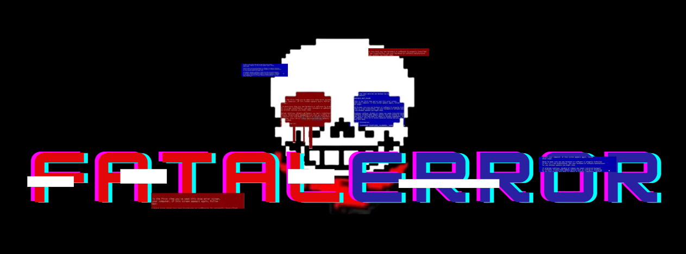
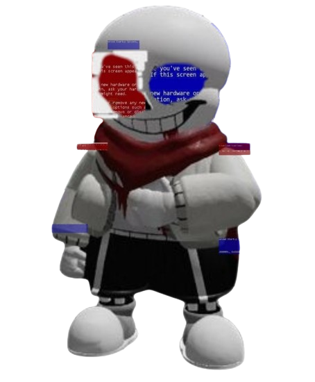
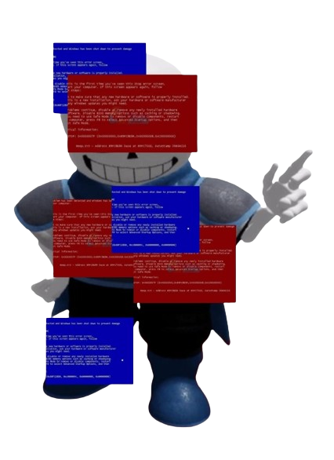
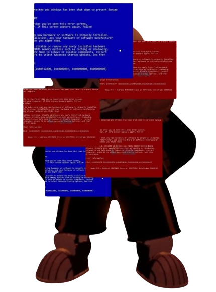
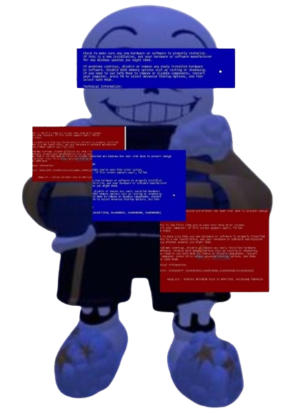

Main Page
Previous Page
Upgrades And Stuff
Undertale : Last Corridor


Fatal
Error
Information
* You Check,
Fatal
Error
ATK ??? DEF ???
* He Seems Annoyed... And Frustrated At You.
* This One Is Rather Unpredictable, Stay Determined
Data
AfterTale Sans, You've Defeated Him Before What's The Difference Now?
- Karmic Retribution : No
- Stamina : 215
- Stamina Gain Rate : 40% Slower Than Classic
- Hitting
Fatal
Will Not Make Him Lose Stamina, Instead He Will Lose Some Of His Bar
(While Moving : 4.5% Bar loss, While Standing still : 10% Bar Lost)
(everytime
Fatal
Is Hit He Will Have A 0.5s Iframe)
- If Fatal Ran Out Of Time/Bar His eyes Will Turn White And Stop Moving Before A BlackOut Happens And You Will Fight
Classic(?)
Again
Passive
* Corrupted World
Occasinally (Around Every 12s) The Map Would Become Dark, As Clump Of Disconnected Codes Decreases Your View Making Fatals Move Unpredictable. Stays Dark for 5s
(Fatal Would See A Glow Outline Of The Charas, The Glow would Be Depending On The Chara Team Soul Trait)
* Withered Code
A Fancy Way Of Bleeding By Getting Your Codes To Be Withered(Stringed Variants Will Now Do DOT(Damage Over Time) Which is Every 1s = Loses 2Hp)
* Stringed
-
Fatal
Error
Has A Chance To Inflict This Status To Anyone Hit By His Attacks
* What Does The Status Do?
- This Status Will Show Strings All Around The effected Charas HP Bar
String Colors Have Split Chances When Attaching
Red Strings
Decrease Your Defense by 15 (No def = 1.2x more damage from
Fatal
Error
)
Blue Strings
Decreases WalkSpeed by 10% And M1Speed by 1.2x
White Strings
If Charas Uses Their Abilites, The Cooldown of their set abilites would have a 1.5x longer CD
(example : fissure = 10s CD ,but got hit by white strings When they Use Their Abilities. fissure = 10s + 1.5x cd = 15s CD)
Enchances Attacks
If A Chara Is Stringed
Fatal
Moves Will Be Enchanced
(Strings Will Stay Attached For 10s And Cannot Stack)
Lore
Fatal Was Finding A Way To Find His "Papyrus" When Suddenly He Was Struck With 9999999Dmg, This Shocked Fatal To The Point That He Had To Lay Down. But When He Closed His eyes He Could See 3 Humans From The Perspective of Classic(?) Sans , Fatal Misunderstands And Thought The 3 Humans Were Attacking him Thanks To The Point Of View That He Is Seeing. Fatal Annoyed, Drags The 3 Humans To His World
Available Attacks Part 1
* Strings Whip
(10 stamina cost)
(CD : 12s)
(Passive Chance : 100%)
* Stringed Bones
(6 stamina cost)
(CD : 8s)
(Passive Chance : 50%)
* Fatal Blaster
(10 stamina cost)
(CD : 8s)
(Passive Chance : 0%)
Variant 1 (If The Chara That Got Hit Doesn't Have Stringed Status)
A "!" Would Appear And
Fatal
Grabs Strings From His eyes And Swinging Them Foward 2 times, Anyone Hit Would Be Slowed For 1.5s
(Damage : 5Hp Per Swing)
Summon Bones From Where Your Cursor is But From the Ceiling With Strings Attached to fatal
(Will Not immediatly Attack, Instead The Bones Would Be Tied to the strings on the Ceiling, While Hanging out in the ceiling the bones will auto aim towards the charas ,it will spawn more bones,the Longer you wait the more bones there Is. Click again to unleash the bones)
(Damage : 10Hp Per Bones)
(Start With 8 Bones With + 1 Second = 1 Bone (Caps at 10s))
Summon A Giant BlastersTo Attack Where The Cursor Aims
(Does not immediately Blast, You Can Still Aim With Cursor for 2s Before it shoots)
(Damage : 16Hp)
Variant 2 (If The Chara That Got Hit Does Have The Stringed Status)
A "!" Would Appear And If The First Swing Hits a Stringed Chara, The Chara Would Proceed to be slowed (-90% Speed For 1s) And Burst Out Strings from Their HpBar Giving A chara That is Near The Burst Stringed Status (Share The Same Strings color , Example (If the chara that got hit has blue strings attached, then the burst would be blue strings))
(Can Hit Multiple Chara)
(Damage : 10HP + DOT : 3s
(Makes The Move CD : 15s)
If A Stringed Chara Gets Hit, The Chara Would Proceed To Have A String Nailed To The Ground With A Bone in which Limits The Chara Range To Walk( If chara try to walk away they will get pulled back). The chara have to destroy The Bone In Order To Move
(Bone Hp = 2 Hits)
If A Stringed Chara Is Present Fatal Blaster Would Increase in size
(+ 0.33% In Size So Max (Aka 3 charas) Would be = (+0.01%) 2x bigger blaster )
Available Attacks Part 2
* Crushing Grasp
(15 stamina cost)
(CD : 16s)
(Passive Chance : 100%)
* LoopHole
(20 stamina cost)
(CD : 20s)
(Passive Chance : 0%)
* Reminiscence Of Copies
(35 stamina cost)
(CD : 50s)
(Passive Chance : 0%)
Variant 1 (If The Chara That Got Hit Doesn't Have Stringed Status)
Fatal
Dashes Foward And Grab A Chara To Crush Their Hand And Knock Them Back
(Makes M1 2x Slower At Swinging for 6s)
(Damage : 12Hp)
Fatal
Creates An entrance Where He Is Standing And Opening An exit To Where Your Mouse Cursor Is
(The Portal Only Stays For 5s Before Going On A CD.)
(Only Fatal Is Able to walk through
Fatal
Pasted His Past Copied Sanses And Forces Them To Fight
Variant 2 (If The Chara That Got Hit Does Have The Stringed Status)
Fatal
Dashes Foward And If a chara Is Hit With Stringed Status,Fatal Would Crush the Chara Hand ,Then Fatal Would Proceed To Make A String ball on the chara and throw them to the Nearest other Chara creating an explosion of strings
(Makes M1 2.5x Slower At Swinging for 8s (For the grabbed chara only))
(Damage : 12HP + DOT : 3s)
(Makes The Move CD : 22s)
If A Stringed Chara Gets Near An Entrance Or An Exit You Can Press The Ability Again To Drag The Chara Into The Portal With Strings
(Brings chara into the other side of the portal)
(Only able to drag once Per Portal Move)
If The Clone Has not gotten killed yet in 30s,after 0.5s Of The Clone Glowing Red it will explode Red strings
(Damage : 15Hp)
(Gurantees Red Strings Passive)
Possible Sanses Clone (Will Dodge 5x)

UnderSwap Sans
Summons A Copy Of UnderSwap Sans To Help Fighting
(Available Attacks)
(Has A Shared CD Of 3s Before Being Able To Attack Again)
(Available Attacks)
{==============}
(Has A Shared CD Of 3s Before The Next Attack)
{==============}
Underswap Sans Bones
Underswap Sans BoneZone
Underswap Sans Blue Walls
Underswap Sans Bone Sliders
Underswap Sans Bone Cascade
(Unique (Does Not Share CD): Copy UnderSwap Will Summon a Bone Shield On Fatal If A Chara gets Close to Fatal(Fatal Is Able To Walk In And Out)(CD : Once Per UnderSwap Clone))

UnderFell Sans
Summons A Copy Of UnderFell Sans To Help You Fight
(Available Attacks)
{==============}
(Has A Shared CD Of 3s Before The Next Attack)
{==============}
Fell Double Blaster
Fell Bonerush
Fell BoneZone
Fell Colored Bones
Fell Blue Spining Bones
(Unique : Copy UnderFell Will Use Force To Push Chara Away If They Get Near Fatal (CD : 20s))

OuterTale Sans
Summons A Copy Of OuterTale Sans To Help You Fight
(Available Attacks)
{==============}
(Has A Shared CD Of 3s Before The Next Attack)
{==============}
Outer Triple Blasters
Outer Big Star
Outer Asteroid
Outer Falling Bones
Outer Spining Star
(Unique : Will Activate Gravitational field If a chara Is 6 Studs Near Fatal(CD : 25s))
How Does The Sanses Work?
The Sanses Have The Same Cooldown As A Normal Player Playing The Character Does, The Sanses will just Goes to the 1st attack then 3s later the 2nd Attacks comes Out Unless the move is Still On CD.
(Example : Outer Uses Big Star, Then 3s later he should use asteroid unless its on cd. If its on cd the sans will just skip to the next move. This will repeat till the sans is killed or exploded)
(How Unique Works is, its not smth that the bot do, but an automatic thing where if a certain condition Is met(in which where a chara team is near a Sans team) The move is automatically activated for the called condition)
Unique Move
* Recall
Fatal
Decided You Were Not Worth His Time And Drags You Back To The Judgement Hall
(Returns To Classic(?) Sans)
Main Page
Previous Page
Upgrades And Stuff